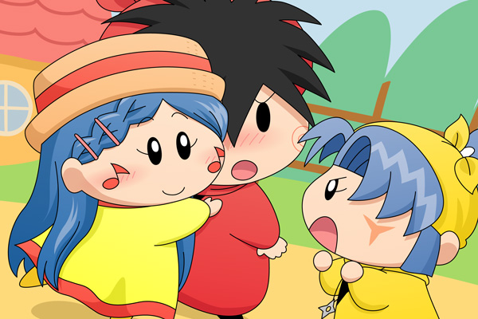

ミント「ねぇヤシチ様？ヤシチ様は私のこと好きですわよね？」
ミントが突然問いかけてきた。
ヤシチ「えっ・・・。まぁ友達としてなら・・・。」
ミント「本当ですか！？ミント嬉しいですっ♪」
ヤシチ「お・・おいっ///」
ミントがヤシチに抱きつく。ヤシチの顔が赤い。
ヤマネ「ミ・ン・ト・殿～～～！！いい加減にしてほしいでございます～！！」
それを見ていたヤマネはミントに向かってキレた。
ヤマネ「今日という今日は許せないでございます！！
ミント殿！！私と勝負でございます！！」
掲示板の２５０００カキコ記念絵になります。記念すべき２５０００回目のカキコをされたのはサファイアさん！ 今回はサファイアさんのリクエストに基づき、サファイアさんのオリフェ・ミントを描かせていただきました♪
設定には「誰もが認める美少女」ということで、気合いを入れて描きましたよ（若干私流に改造が入ってます^^;）。特徴のある髪型が結構難しかった・・・(^◇^;)。
上のストーリーは、サファイアさんの小説「妖精忍者とお嬢様☆」の第３話からの引用になります。ヤシチのことが大好きなミントは、恋敵ヤマネの前であろうが、堂々とヤシチに抱きつきます！ ヤマネも相手が年上だろうがお構いなしにミントに食ってかかります！ 私的な名場面の一つだったりします。しかしミントに対し、地味なヤシチは不釣り合いのような・・・。
次回のキリ番は３００００カキコになります。今度は誰がキリ番をゲットされるのか楽しみです。
(2011/12/10)